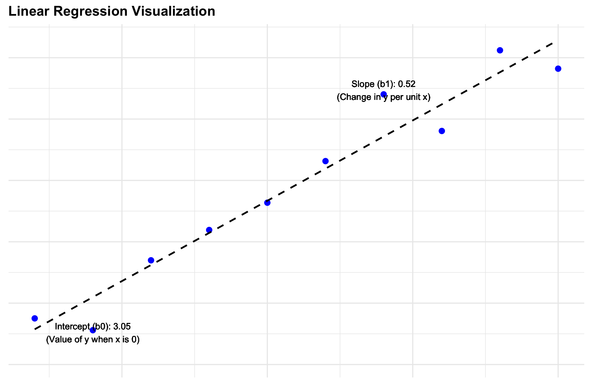
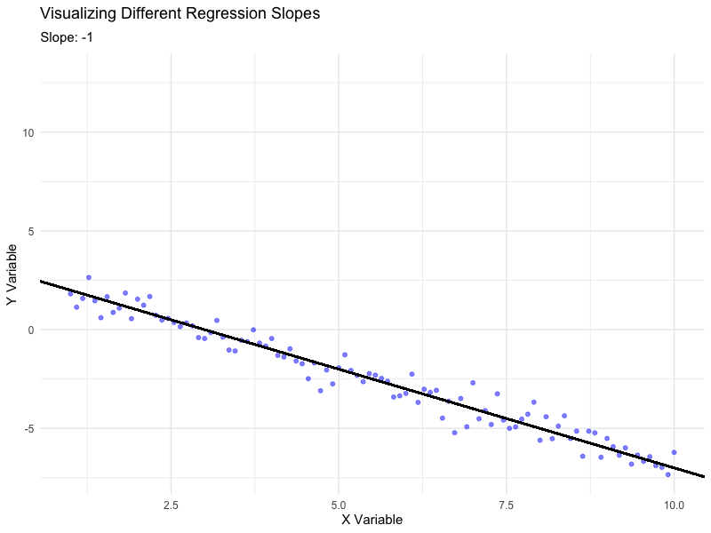
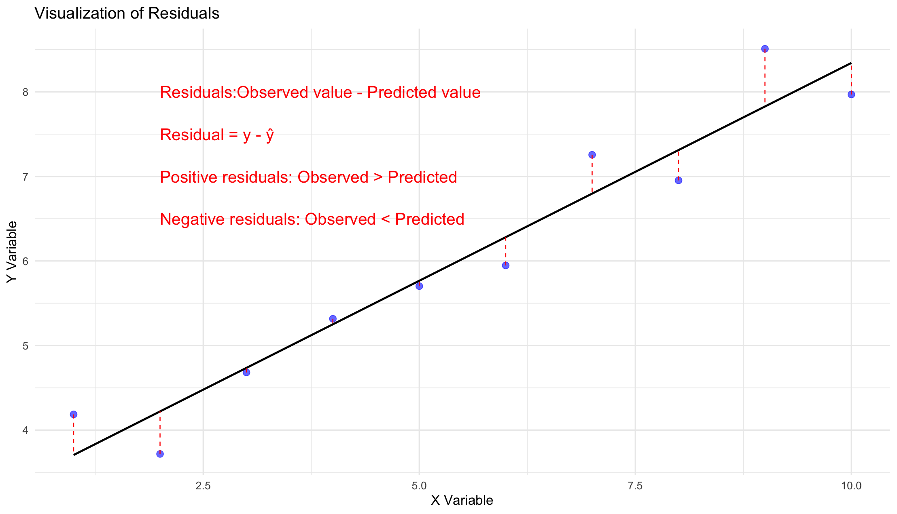
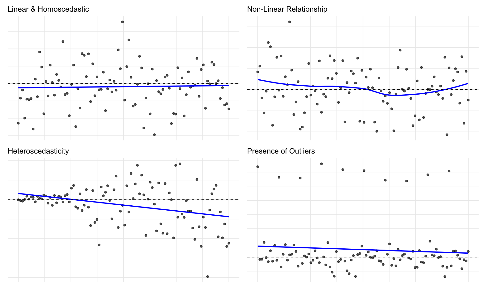
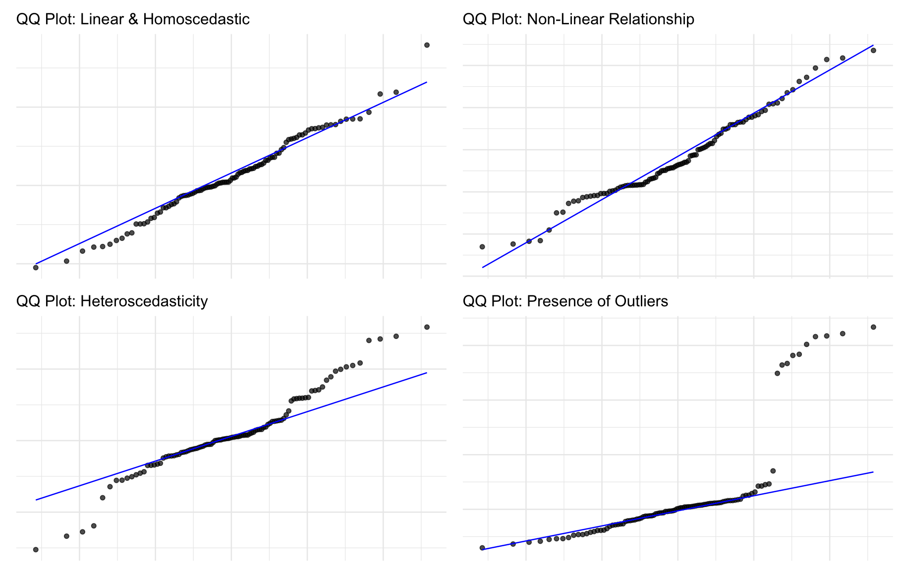

Introduction to Regression
Simple linear regression lives up to its name: it is a very straightforward approach for predicting a quantitative response Y on the basis of a single predictor variable X. It assumes that there is approximately a linear relationship between X and Y. But, one often wonders what does that mean?
It means that the mean of the response variable Y is a linear function of the predictor X (A straight line relationship where as X increases Y increases). Mathematically, we can write this linear relationship as:
\[Y = \beta_0 + \beta_1X + \varepsilon\]
Where:
- \(\beta_0\) (Intercept): The value of \(Y\) when \(X = 0\), representing the starting point of the regression line.
- \(\beta_1\) (Slope): The average change in \(Y\) for a one-unit increase in \(X\), representing the steepness of the line.
- \(\varepsilon\) (Error Term): The difference between the observed \(Y\) and the predicted \(Y\), capturing unexplained variability.


Objective
The primary goal of simple linear regression is to estimate the coefficients \(\beta_0\) and \(\beta_1\) in order to minimize the error term \(\varepsilon\).
This is achieved using the method of least squares, which minimizes the sum of squared residuals (\(\text{SSR}\)): Simply put - we want to find the line that best fits the data.
\[\text{SSR} = \sum_{i=1}^n (Y_i - (\beta_0 + \beta_1X_i))^2\]
By minimizing \(\text{SSR}\), we find the values of \(\beta_0\) and \(\beta_1\) that best fit the data.
| Component |
Description |
Purpose |
| \(Y_i\) |
Actual observed value of \(Y\) for the \(i\)-th data point. |
This is the "truth" or real-world data we are trying to predict. |
| \(\beta_0\) |
The intercept of the regression line. |
Starting value of \(Y\) when \(X = 0\). |
| \(\beta_1\) |
The slope of the regression line. |
Defines how much \(Y\) changes for a one-unit increase in \(X\). |
| \(X_i\) |
The predictor or independent variable for the \(i\)-th data point. |
Helps predict \(Y_i\) using the regression equation. |
| \(Y_i - (\beta_0 + \beta_1X_i)\) |
The residual (difference) between the actual value and the predicted value. |
Measures how far off the prediction is from the actual value. |
| \((Y_i - (\beta_0 + \beta_1X_i))^2\) |
The squared residual for the \(i\)-th data point. |
Ensures all errors are positive and emphasizes larger errors. |
| \(\sum_{i=1}^n\) |
Summation over all data points. |
Adds up all the squared residuals to get the total error. |
Estimating Coefficients
The coefficients \(\beta_0\) and \(\beta_1\) are calculated using the following formulas:
\[\beta_1 = \frac{\sum_{i=1}^n (X_i - \bar{X})(Y_i - \bar{Y})}{\sum_{i=1}^n (X_i - \bar{X})^2}\]
\[\beta_0 = \bar{Y} - \beta_1\bar{X}\]
Where:
- \(\bar{X}\) and \(\bar{Y}\) are the means of \(X\) and \(Y\), respectively.
- \(\beta_1\) is the slope, determined by the covariance between \(X\) and \(Y\) divided by the variance of \(X\).
- \(\beta_0\) is the intercept, centering the regression line based on the data.
The formula for \(\beta_1\), the slope of the regression line, closely resembles the formula for Pearson's correlation coefficient (\(r\)). Specifically:
\[\beta_1 = \frac{\text{Cov}(X, Y)}{\text{Var}(X)} = \frac{\sum_{i=1}^n (X_i - \bar{X})(Y_i - \bar{Y})}{\sum_{i=1}^n (X_i - \bar{X})^2}\]
On the other hand, the formula for correlation (\(r\)) is given as:
\[r = \frac{\text{Cov}(X, Y)}{\sqrt{\text{Var}(X) \cdot \text{Var}(Y)}}\]
The key difference between the two lies in the denominator:
- \(\beta_1\) scales the covariance by the variance of \(X\) alone, as it represents the change in \(Y\) for a one-unit change in \(X\).
- \(r\), on the other hand, normalizes the covariance by the standard deviations of both \(X\) and \(Y\), making it a unitless measure of the strength and direction of the relationship between \(X\) and \(Y\).
In essence, Correlation is the standardized version of a slope.
Residuals

Residuals are the differences between the observed values of the response variable \(Y\) and the values predicted by the regression line. They are calculated as:
\[e_i = Y_i - (\beta_0 + \beta_1X_i)\]
Residuals are useful for assessing how well the model fits. A good model will have residuals that are randomly distributed around zero, indicating that the model captures the underlying relationship between the variables.
On the other hand, patterns in the residuals (e.g., a curved relationship or heteroscedasticity) suggest that the model may not be appropriate for the data.
Significance Testing and Measures of Uncertainty
Standard Errors
Standard errors measure the uncertainty in the estimated coefficients (\(\beta_0\) and \(\beta_1\)). These are calculated as:
\[ SE(\beta_0) = \sqrt{\frac{\sigma^2}{n} + \frac{\bar{X}^2}{\sum_{i=1}^n (X_i - \bar{X})^2}} \]
\[ SE(\beta_1) = \sqrt{\frac{\sigma^2}{\sum_{i=1}^n (X_i - \bar{X})^2}} \]
Where:
- \(\sigma^2\) is the variance of the error term (\(\varepsilon\)), estimated using the residuals.
- \(n\) is the sample size, representing the number of data points.
- \(\bar{X}\) is the mean of the predictor variable \(X\).
- \(X_i\) represents each individual value of \(X\).
- Smaller standard errors indicate greater precision in the coefficient estimates.
- Standard errors decrease as the sample size (\(n\)) increases.
Breaking It Down
Here is how these formulas work in a simplified way:
-
To estimate \(\sigma^2\), we calculate the residual variance, which measures how far the actual values of \(Y\) are from the predicted values (\(\hat{Y}\)):
\[
\sigma^2 = \frac{\text{Residual Sum of Squares (RSS)}}{n - 2}
\]
Where:
- \(\text{RSS} = \sum_{i=1}^n (Y_i - \hat{Y}_i)^2\)
- \(n - 2\) accounts for the two parameters (\(\beta_0\) and \(\beta_1\)) estimated in the model.
-
Once \(\sigma^2\) is estimated, we plug it into the formulas for \(SE(\beta_0)\) and \(SE(\beta_1)\) to calculate the variability of the coefficients:
- \(SE(\beta_1)\): Divides \(\sigma^2\) by the variance in \(X\). More spread in \(X\) gives us more "leverage" to estimate the slope precisely.
- \(SE(\beta_0)\): Combines \(\sigma^2\) with an additional term accounting for the average value of \(X\), since the intercept depends on the position of \(X = 0\).
Hypothesis Testing
To test whether there is a relationship between \(X\) and \(Y\), we evaluate the null hypothesis (\(H_0\)) and alternative hypothesis (\(H_a\)):
\[ H_0: \beta_1 = 0 \quad \text{vs.} \quad H_a: \beta_1 \neq 0 \]
- \(H_0\): No relationship exists between \(X\) and \(Y\).
- \(H_a\): A relationship exists between \(X\) and \(Y\).
We calculate the t-statistic to determine if \(\beta_1\) is significantly different from 0:
\[ t = \frac{\beta_1 - 0}{SE(\beta_1)} \]
The t-statistic measures how many standard deviations \(\beta_1\) is away from 0. Using the t-distribution, we compute the p-value, which indicates the probability of observing such a result if \(H_0\) is true.
A small p-value (e.g., \(p < 0.05\)) suggests rejecting \(H_0\), supporting the conclusion that \(X\) and \(Y\) are related.
Confidence Intervals
Confidence intervals provide a range of plausible values for the true coefficient. For example, a 95% confidence interval for \(\beta_1\) is calculated as:
\[ \beta_1 \pm 2 \cdot SE(\beta_1) \]
This means that if we repeated the analysis many times, 95% of the intervals would contain the true value of \(\beta_1\).
Model Fit
Overview
To assess how well the model fits the data. This is typically done using two related metrics:
- Residual Standard Error (RSE)
- \(R^2\) Statistic
These metrics provide insight into the accuracy of the model and the proportion of variability in the response variable that is explained by the predictor.
Residual Standard Error (RSE)
The RSE measures the average distance between the observed data points and the regression line. It is calculated as:
\[\text{RSE} = \sqrt{\frac{\sum_{i=1}^n (Y_i - \hat{Y}_i)^2}{n-2}}\]
- \(Y_i\): The actual observed value of \(Y\).
- \(\hat{Y}_i\): The predicted value of \(Y\) from the regression model.
- \(n\): The total number of data points.
RSE simply tells us how far, on average, the actual data points are from the predicted values. A smaller RSE means the model fits the data better.
\(R^2\) Statistic
The \(R^2\) statistic measures the proportion of variability in the response variable \(Y\) that is explained by the predictor \(X\). It is calculated as:
\[R^2 = 1 - \frac{\text{RSS}}{\text{TSS}}\]
- \(\text{RSS}\): Residual Sum of Squares, the variability left unexplained by the model.
- \(\text{TSS}\): Total Sum of Squares, the total variability in \(Y\).
\(R^2\) ranges between 0 and 1:
- A value close to 1 means the model explains most of the variability in \(Y\).
- A value close to 0 means the model explains little of the variability in \(Y\).
\(R^2\) shows how much of the "story" about \(Y\) is explained by \(X\). The closer \(R^2\) is to 1, the better the fit.
Comparison
Residual Standard Error: Provides an absolute measure of the model's fit, in the units of \(Y\). This can be thought of as a measure of lack of fit, then a measure of fit.
\(R^2\): Provides a relative measure of fit, showing the proportion of explained variance, independent of the units of \(Y\).
Example
Let's say for an example we are trying to predict the sales of TV sets based on the advertising budget:
| Metric |
Value |
Interpretation |
| Residual Standard Error |
3.26 |
This value would suggest that average deviation of actual sales from the predicted sales is about 3,260 units. |
| \(R^2\) Statistic |
0.612 |
About 61% of the variability in sales is explained by TV advertising. |
Simplifying R Squared -
The \(R^2\) statistic is a measure that tells us how much of the changes or variability in the response variable (\(Y\)) can be explained by the predictor variable (\(X\)) using the regression model.
Breaking it Down:
-
What does "variability in \(Y\)" mean?
- Variability in \(Y\) refers to how much the values of \(Y\) differ from each other. For example, if you have a dataset of student test scores, some scores will be high, and some will be low. The variability is the range and spread of these scores.
- If there is no variability in \(Y\), all the values would be the same (e.g., every student scored exactly 70). But in real-world data, variability always exists.
-
What does \(R^2\) measure?
- \(R^2\) tells us how much of that variability in \(Y\) can be linked to or predicted by changes in \(X\). For example:
- If \(R^2 = 0.75\), it means 75% of the variability in \(Y\) is explained by \(X\), and the remaining 25% is due to other factors not included in the model or random noise.
- If \(R^2 = 0.25\), only 25% of the variability in \(Y\) is explained by \(X\), and 75% is unexplained.
-
How is \(R^2\) calculated?
-
Why does \(R^2\) matter?
- High \(R^2\): The model does a good job explaining or predicting \(Y\). For example, if \(R^2 = 0.9\), it means most of \(Y\)'s variability is captured by the regression model.
- Low \(R^2\): The model doesn’t explain much about \(Y\), meaning other factors or a different model might be needed.
Properties and Assumptions
General Properties of a Linear Model
A linear regression model relies on several key assumptions and properties to ensure its validity. Below is a table summarizing these properties and what they mean:
| Property |
Description |
What It Means |
| Linearity |
The relationship between the predictor (\(X\)) and response (\(Y\)) is linear. |
For every unit increase in \(X\), there is a constant change in \(Y\). The data should follow a straight-line trend when plotted. |
| Monotonicity |
The relationship between \(X\) and \(Y\) is either consistently increasing or decreasing. |
There should be no reversals in the trend (e.g., \(Y\) does not first increase and then decrease as \(X\) increases). |
| Homoscedasticity |
The variance of the residuals (errors) is constant across all levels of \(X\). |
The spread of the residuals should remain the same, rather than increasing or decreasing as \(X\) changes. |
| Independence |
Observations are independent of each other. |
Errors for one data point should not be related to errors for another. |
| Normality |
The residuals (errors) are normally distributed. |
When plotted, the errors should form a bell-shaped curve, ensuring valid hypothesis testing and confidence intervals. |
| No Multicollinearity |
The predictor variables (in multiple regression) are not highly correlated with each other. |
High correlation between predictors can distort the estimates of the coefficients and reduce the reliability of the model. |
| Exogeneity |
The predictor variable (\(X\)) is uncorrelated with the error term (\(\varepsilon\)). |
\(X\) should not contain measurement errors or be influenced by omitted variables that affect \(Y\). |
Understanding the Problem -
Bias
Bias refers to the error introduced when the model makes simplifying assumptions about the real-world relationship between \(X\) and \(Y\). In linear regression, bias occurs when the true relationship is different, from what the model assumes. For example, if the true relationship is non-linear, but the model assumes a linear relationship, bias will be introduced.
Mathematically, bias is defined as:
\[ \text{Bias}(\hat{f}) = \mathbb{E}[\hat{f}(X)] - f(X) \]
Where:
- \(\mathbb{E}[\hat{f}(X)]\): The expected prediction from the model over different datasets.
- \(f(X)\): The true underlying function.
A high bias model will systematically underfit the data, failing to capture the true relationship between \(X\) and \(Y\).
Variance
Variance measures the model's sensitivity to fluctuations. High variance models capture noise as if it were a true signal. Simply put, variance is the variability in model predictions across different datasets.
Mathematically, variance is defined as:
\[ \text{Variance}(\hat{f}) = \mathbb{E}[(\hat{f}(X) - \mathbb{E}[\hat{f}(X)])^2] \]
Where:
- \(\hat{f}(X)\): The model's prediction for a specific dataset.
- \(\mathbb{E}[\hat{f}(X)]\): The expected prediction from the model over all datasets.
High variance models perform well on one data but poorly on new, unseen data. For example, a study on the relationship of IQ and gender for psychology students may not generalize to a broader population.
Impact of Assumption Violations


| Assumption |
Violation |
Impact on Estimates |
Impact on Accuracy (Standard Errors & p-values) |
| Linearity |
Non-linear relationship between predictors and response. |
Estimates are biased because the true relationship is not captured. |
Standard errors are underestimated, leading to misleadingly small p-values. |
| Homoscedasticity |
Non-constant variance of residuals. |
Estimates remain unbiased. |
Standard errors are incorrect, leading to invalid confidence intervals and hypothesis tests. |
| Independence |
Residuals are correlated (e.g., time-series data). |
Estimates may be biased due to residual dependencies. |
Standard errors are underestimated, inflating Type I error rates (false positives). |
| Normality |
Residuals are not normally distributed. |
Estimates remain unbiased. |
p-values and confidence intervals become unreliable for small sample sizes. |
| No Multicollinearity |
Predictors are highly correlated. |
Estimates are unstable and unreliable. |
Standard errors inflate, leading to large p-values and reduced statistical power. |
| Exogeneity |
Predictors are correlated with the error term. |
Severe bias in estimates due to omitted variable bias. |
Standard errors and p-values are invalid, making inference impossible. |
| Outliers |
Extreme values in predictors or response. |
Estimates are heavily influenced and may not represent the majority of the data. |
Standard errors increase, leading to unstable p-values and reduced reliability of results. |